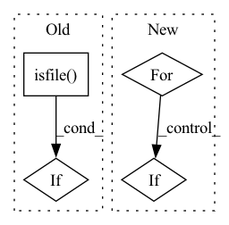

Pattern ID :1837
Before Change
conf_data = Config(config_filepath=conf_data_filepath)["dataset"]
storage_name = conf_data["storage_name"]
tar_filepath = os.path.join(pt_data_dir, storage_name + ".tar")
if not os.path.isfile( tar_filepath) :
raise RuntimeError(f"Tar file for dataset at {tar_filepath} was not found")
tar_size = pathlib.Path(tar_filepath).stat().st_size
After Change
print("conf_data_filepath:", conf_data_filepath)
conf = Config(config_filepath=conf_data_filepath)
for dataset_key in ["dataset", "dataset_search", "dataset_eval"]:
if dataset_key in conf:
conf_data = conf[dataset_key]
untar_dataset(pt_data_dir, conf_data, args.dataroot)
In pattern: SUPERPATTERN
Frequency: 3
Non-data size: 4
Instances Fragment ID: 8343135
Project Name: microsoft/archai
Commit Name: cec9c167805699f4590f3f81c8584e8c419bb0d8
Time: 2020-05-18
Author: shitals@microsoft.com
File Name: scripts/datasets/pt_install.py
M Class Name: AnonimousClass
N Class Name: AnonimousClass
M Method Name: main(0)
N Method Name: main(0)
M Parent Class:
N Parent Class:
M File Name: scripts/datasets/pt_install.py
N File Name: scripts/datasets/pt_install.py
M Start Line: 43
M End Line: 65
N Start Line: 62
N End Line: 74
Before Change
@property
def raw_paths(self):
if os.path.isfile( self.paths) :
return [self.paths]
if os.path.isdir(self.paths):
return [After Change
continue
if os.path.isdir(path):
for file_ in os.listdir(path):
if file_.endswith(".h5"):
paths.append(os.path.join(path, file_))
continue
Fragment ID: 8343134
Project Name: torchmd/torchmd-net
Commit Name: 5542bf0ed7d9bafd2d14b10260b57ecbb93cd28e
Time: 2022-10-19
Author: r.galvelis@acellera.com
File Name: torchmdnet/datasets/ace.py
M Class Name: Ace
N Class Name: Ace
M Method Name: raw_paths(1)
N Method Name: raw_paths(1)
M Parent Class: Dataset
N Parent Class: Dataset
M File Name: torchmdnet/datasets/ace.py
N File Name: torchmdnet/datasets/ace.py
M Start Line: 62
M End Line: 71
N Start Line: 63
N End Line: 79
Before Change
@property
def raw_paths(self):
if os.path.isfile( self.paths) :
return [self.paths]
if os.path.isdir(self.paths):
return [After Change
continue
if os.path.isdir(path):
for file_ in os.listdir(path):
if file_.endswith(".h5"):
paths.append(os.path.join(path, file_))
continue
Fragment ID: 8343139
Project Name: torchmd/torchmd-net
Commit Name: d23e6500f2cef1fa56d6c99ce5fdb983f1379bca
Time: 2022-10-28
Author: peastman@stanford.edu
File Name: torchmdnet/datasets/ace.py
M Class Name: Ace
N Class Name: Ace
M Method Name: raw_paths(1)
N Method Name: raw_paths(1)
M Parent Class: Dataset
N Parent Class: Dataset
M File Name: torchmdnet/datasets/ace.py
N File Name: torchmdnet/datasets/ace.py
M Start Line: 61
M End Line: 70
N Start Line: 63
N End Line: 79